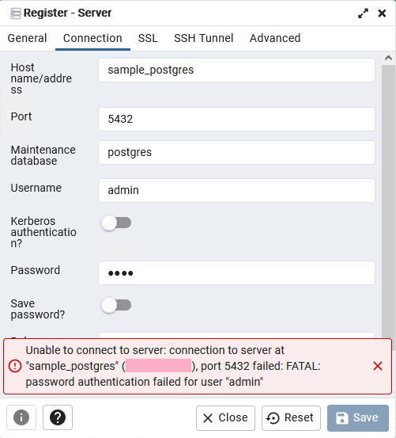

Dockerを使いPostgreSQLの環境を立ち上げた後で、認証情報を変更するとなぜか正しいはずなのに認証が通らずエラーを吐くようになってしまうケースに遭遇しました。現象と対処法をご紹介します。
pgAdminなどを使ってDockerコンテナ上に構築したPostgreSQLへログインしようとすると、エラーが発生してログインできません。
error: password authentication failed for user "xxx"上記がそのエラーメッセージでして、xxxの部分にはユーザー名が入ります。xxxというユーザーのパスワード認証に失敗したと言っています・・・が、実際は正しい認証情報を入力していてもエラーになります。入力が正しくても間違っていてもダメと言われるわけですね。

pgAdminだと上記のように表示されます。
このエラーは特定の手順を踏むと再現します。
ここで言う認証情報とはPOSTGRES_USERやPOSTGRES_PASSWORDを指します。これらの設定値を変更すると、新しい認証情報を使ったログインができなくなってしまいます。
version: "3"
services:
postgres:
image: postgres
container_name: sample_postgres
ports:
- 5432:5432
environment:
POSTGRES_USER: admin
POSTGRES_PASSWORD: admin
POSTGRES_DB: sample_db
volumes:
- ./initdb:/docker-entrypoint-initdb.d
- ./postgres:/var/lib/postgresql/data
pgadmin:
image: dpage/pgadmin4
container_name: sample_pgadmin
restart: always
ports:
- 30001:80
environment:
PGADMIN_DEFAULT_EMAIL: admin@example.com
PGADMIN_DEFAULT_PASSWORD: admin
volumes:
- pgadmin:/var/lib/pgadmin
depends_on:
- postgres
volumes:
postgres:
pgadmin:たとえば上記のようなdocker-compose.ymlで考えてみます。
PostgreSQLの部分で指定しているPOSTGRES_USER: adminやPOSTGRES_PASSWORD: adminの部分を、一度コンテナを構築しPostgreSQLにログインたあとで、POSTGRES_USER: hogeやPOSTGRES_PASSWORD: fugaなどに変更してコンテナをリビルドします。その後、コンテナの構築直後と同様にpgAdminなどを使ってPostgreSQLにログインしようとすると、入力した認証情報が正しくてもエラーを吐くようになってしまいます。
認証情報を一度コンテナを構築したあとで変更した際に上記のようなエラーを吐くようになる理由は、認証情報を初期起動の際に設定するためのようです。その後、認証情報を変えて起動しようとしても、最初に設定した認証情報と一致しないのでエラーになってしまうと思われます。そして、この認証情報はリビルドでは更新されないようで、
volumes:
- ./initdb:/docker-entrypoint-initdb.d
- ./postgres:/var/lib/postgresql/dataymlファイルの中では、PostgreSQLのコンテナ指定においてボリュームを上記のように指定しています。コンテナを構築すると、各種設定ファイルが指定されたフォルダである./postgresに格納されるのですが、エラーが発生した場合はこのフォルダを丸ごと削除すると解消します。
コンテナのリビルトではエラーが解消されないのは、このフォルダ内にある古い認証情報がログインの際に参照されるためです。このフォルダを削除することで、当初設定された古い認証情報を破棄し、新たに設定し直せるわけです。
docker rm -v <CONTAINER_ID>上記のコマンドを実行して、PostgreSQLのコンテナだけでなく紐づいたボリュームも一緒に削除します。なお、上記のコマンドはコンテナが実行中だとエラーになって削除できないため、事前に停止しておくことが必要です。
docker system prune
docker volume prune他のコンテナに紐付いているボリュームも一緒に削除してかまわないなら、個別にコンテナを指定するのではなく「存在するボリュームはすべて削除する」上記のコマンドを実行しても良いかもしれません。
自分は、「なんか変ならコンテナをリビルトすればいいや」と思ってしまうタイプなのですが、そのリビルトでは解決しないケースをご紹介しました。このエラーに限りませんが、何かおかしいならコンテナの再作成だけでなく「ボリューム削除」を実行する必要があるケースについて、頭の片隅にでも入れておく必要があるかもしれません。